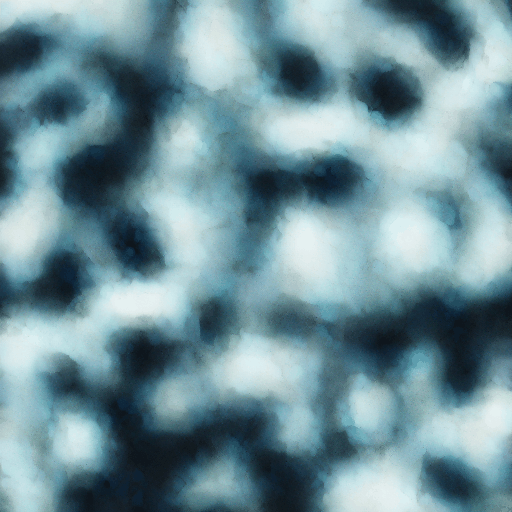
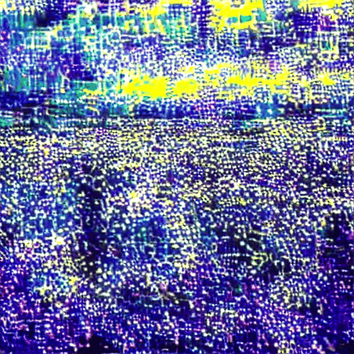

⚡ AnimateDiff-Lightning & Gradio UI
Two new additions since the initial release.
AnimateDiff-Lightning on Blackhole
We integrated ByteDance's distilled motion adapter (arXiv:2403.12706) into all three modes — including Blackhole hardware. On P300C: ~4.3 s/frame (4 steps) vs ~15 s/frame standard. The key was implementing TtEulerScheduler — a thin wrapper around EulerDiscreteScheduler (trailing, linear) that feeds the correct timestep tensors into build_tlist(). Enable with:
# Blackhole hardware — ~4.3 s/frame python examples/generate.py --lightning # CPU — ~20 s/frame, no hardware required python examples/generate.py --mode cpu --lightning
On Blackhole/sim the base SD 1.4 TTNN UNet is used — CFG=7.5 retained for full guidance. CPU Lightning uses the real distilled adapter (CFG=1.0 baked in). Blackhole samples run 25 steps · Euler · ~15 s/frame; full 10-prompt comparison in the gallery.
Gradio UI
A browser-based interface for point-and-click generation — all three modes (Blackhole, ttsim, CPU) plus Lightning controls, live in the same window.
pip install -e ".[ui]" python app.py # → http://localhost:7860
Select mode → enter prompt → adjust frames/steps/seed → click Generate. Lightning checkbox is available in all modes. Output GIF displays inline.

